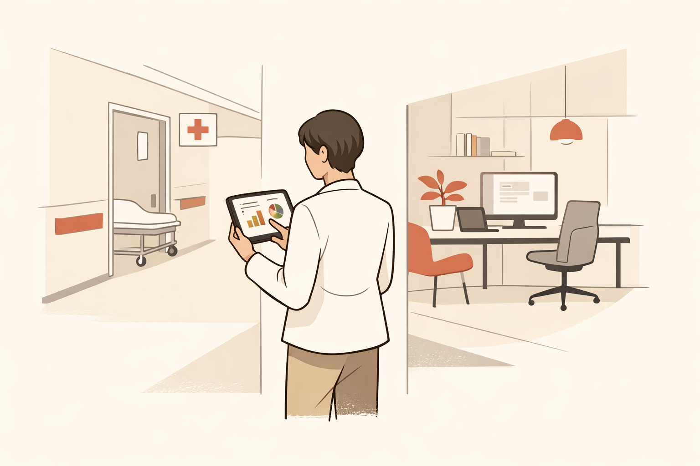
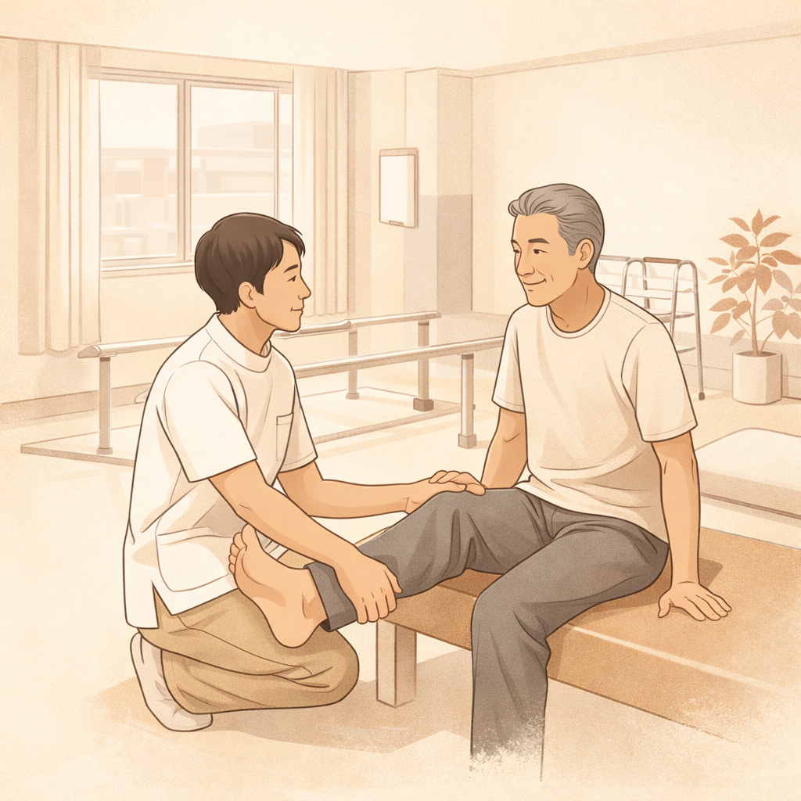
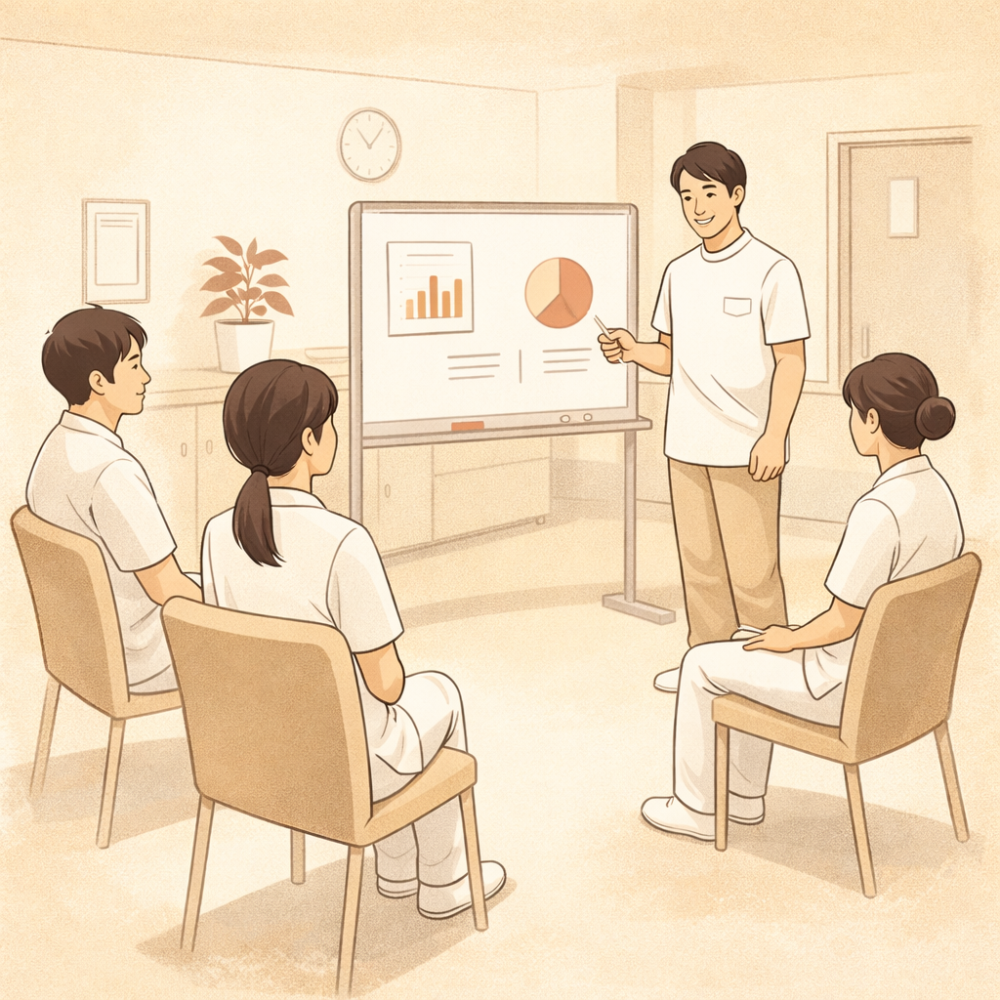

医療現場の泥臭い運用を知っている人間が、
テクノロジーで「ちょうどいい仕組み」に変える。
それがBRIDGEです。

現場を知らない人間が作ったシステムは、現場に定着しない。
私は理学療法士として患者のそばに立ち、
経営コンサルタントとして数字の責任を負ってきた。
数字は大事だ。
でも、数字で現場を縛る設計は間違っている。
KPIは管理の道具ではなく、対話のきっかけであるべきだ。
朝礼で「あと何単位」と詰めるためではなく、
「ここを一緒に変えよう」と話すためにある。
大企業向けの重いシステムは要らない。
中小のクリニックが、明日から使えるものを。
軽くて、分かりやすくて、現場が嫌がらないもの。
BRIDGEは、そういうものを作る会社です。
Excel、レセコン、手書きメモ。月次の数字をまとめるのに毎回1時間。院長に聞かれても即答できない。
朝礼の数字を毎朝手作業でまとめるのはリーダーだけ。その人が休んだら誰もできない。
まとめて集計するから、目標未達に気づくのは月末。月中の軌道修正ができない。
大手SaaSは月10万円以上。導入に半年。うちの規模には重すぎる。
ツールを入れても使いこなせない。現場は「また新しいシステム？」と嫌がる。
経営が見たい数字と現場で使いたい数字が噛み合わない。数字が「管理の道具」になっている。


リハビリ部門の運営を1画面で見渡せるダッシュボード。
PT別の単位数、目標達成率、キャンセル率、朝礼サマリーの自動生成まで。
現場のリーダーが毎朝30分かけていた集計作業を、ゼロにする。
全12章・360問を完全収録。
間違えた問題は自動で蓄積され、弱点だけを復習できる。
各問に「正答の根拠」「誤答の整理」「試験のポイント」の3構造解説付き。
スマホでもPCでも、いつでもどこでも。
外来クリニックの患者フローを追うダッシュボード。
初診率、リハ実施率、キャンセル率——数字の「流れ」を見ることで、
現場との対話のきっかけをつくる。2施設の横並び比較にも対応。
複数の学習を並行管理するダッシュボード。
資格勉強、英語、金融——全部まとめて「今どこにいるか」が見える。
5秒で記録、30日ヒートマップで習慣化を可視化。
エンジニアでもコンサルファームでもなく、リハビリの現場で汗をかいてきた人間が設計する。だから「現場で使えない」が起きない。
KPIを達成率で詰める文化は作らない。朝礼で「ここを一緒に良くしよう」と対話できるダッシュボードを設計する。
中小規模のクリニックが自分たちで使える軽さ。ITに詳しい人がいなくても回る設計。それが最低条件。
完成品を納品して終わりではない。最小構成で渡して、現場の声を聞いて、一緒に育てていく。
運営・採用・評価・報酬・導線。分断せず横断して考える。部分最適ではなく全体最適を設計する。
BRIDGEの製品は、自分の日常業務を楽にするために作ったものが原型。自分が使わないものは売らない。
整形外科クリニック・リハビリ部門の例
理学療法士として患者と向き合う臨床を経験した後、事業会社にて医療経営コンサルティングに転身。PMI・バリューアップフェーズにおいてリハビリ部門の数値責任を担い、運営改善・KPI設計・評価制度構築を現場レベルで推進してきました。
「現場感のない施策は、どれだけ美しくても機能しない。」
この信念のもと、自らの日常業務で必要なツールを設計・開発し始めたことがBRIDGEの出発点です。自分が使って効果があったものを、同じ課題を持つ医療機関に提供する。その繰り返しで事業を作っています。
得意領域は、既にある運用を整理し、見える化し、回る仕組みに変えること。ゼロから発明するより、1を10に磨くことに強みがあります。
「こんなこと頼めるの？」くらいの温度感で構いません。
現場の課題を聞かせてください。一緒に考えます。